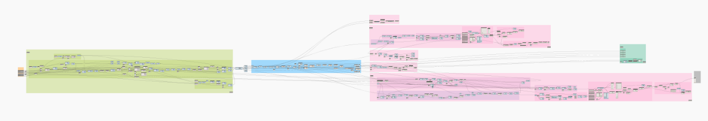
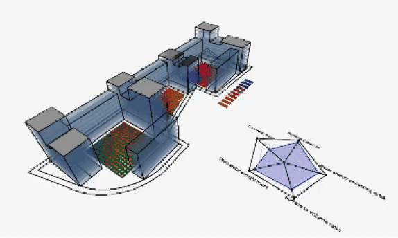
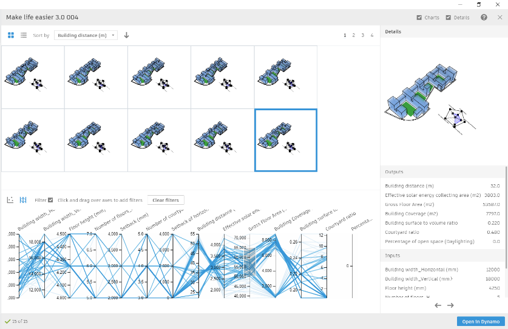

← 返回简历
MSc Modern Building Design · University of Bath · 2021
研究成果 · 生成式设计
硕士论文与 Galliard Homes 产业实习成果：验证 Dynamo + Refinery（NSGA-II） 能否在概念设计阶段自动探索并多目标优化住宅体量方案，并与 Kreo / TestFit 等商用 Building Configurator 对比。
MSc dissertation & Galliard Homes placement: examining Dynamo + Refinery (NSGA-II) for automated multi-objective residential massing optimization at concept stage, compared against Kreo / TestFit building configurators.
案例 Wimbledon Stadium Residential, London平台 Dynamo · Refinery · Revit · Ladybug时间 2020.12 Presentation · 2021.01 Thesis
📄 阅读完整论文正文（PDF · University of Bath · Distinction）
📄 Read full dissertation (PDF · University of Bath · Distinction)
📖 故事版（零基础可读）→
核心命题： 能否用编程式生成式设计，替代传统「手绘草图 → 少量方案 → 事后性能分析」的低效迭代，为开发商早期方案决策提供量化证据？
Core question: Can programming-based generative design replace the inefficient loop of sketching → few options → post-hoc simulation, providing evidence-based early-stage decisions?
01 研究背景
性能导向不足 — 可持续与收益指标往往在深化阶段才被动满足早期迭代效率低 — 反复改模占用大量非增值时间多目标决策缺证据 — 密度、日照、热工等目标相互冲突
Weak performance focus — sustainability & profit metrics addressed too lateLow early-stage automation — repetitive remodelling is non-value-addedMulti-objective gaps — density, daylight & thermal goals conflict without data
02 案例实践 · Wimbledon Block 1

Dynamo 脚本总览 — 参数化建模（绿）· 五维评估（粉）· Revit 输出（蓝）
Dynamo script overview — parametric modelling · evaluation · Revit output
三大设计变量
W 建筑宽度 10–25 m（朝向差异化）H 建筑高度 5–10 层C 庭院数量 3–5 个
W Building width 10–25 m (orientation-based)H Building height 5–10 storeysC Courtyard count 3–5
五大多目标指标
1 最小化 SVR（表面积体积比 → 热工性能）2 最大化屋顶有效太阳能采集面积3 最大化建筑间距（≥21 m）4 最大化开放空间比5 最大化庭院日照时数（BRE 2h 标准）
1 Minimize SVR (surface-to-volume ratio → thermal)2 Maximize effective solar collection area3 Maximize building separation (≥21 m)4 Maximize open space ratio5 Maximize courtyard sunlight hours (BRE 2h)

五维评估演示 — 庭院日照热力图与雷达图联动
5-metric evaluation demo — courtyard sunlight heatmap & radar chart

Refinery 优化输出 — 方案矩阵 · 平行坐标筛选 · 性能指标
Refinery output — option grid · parallel coords · performance metrics
03 多路径对比
论文第 5 章从开发商视角，对传统概念设计 、Dynamo 编程式 GD 与Building Configurator（Kreo / TestFit） 三种早期规划路径做了并列评估。以下客观列出各路径的优势与局限，不作单一推荐。
Thesis Ch.5 compares three early-planning paths from a developer's view: conventional design , Dynamo programming-based GD , and Building Configurators (Kreo / TestFit) . Pros and cons below are presented objectively — no single winner.
路径 A · 传统概念设计
手绘草图 / 物理模型 + 建筑师经验迭代，RIBA Stage 2 常规流程。
Sketch / physical model + architect-led iteration — standard RIBA Stage 2 workflow.
优势 Pros
能处理街景、规划语境、客户审美等非量化设计意图
对异形地块、复杂边界适应性强，不依赖固定算法规则
只需传统建筑技能，无需编程或额外软件订阅
多专业协作成熟，适用于各类项目类型
Handles non-quantifiable intent — streetscape, planning context, client taste
Strong on irregular sites; not bound to fixed algorithmic rules
Traditional architectural skills only — no coding or extra subscriptions
Mature multidisciplinary collaboration; applicable to all project types
局限 Cons
方案探索有限（通常 <5 个），难以穷尽多目标最优解
迭代以「可接受」为终点，而非量化意义上的最优
反复改模耗时长（常见 4–6 周至数月），非增值劳动占比高
协作依赖会议与文件往来，信息同步效率低
性能评估往往在方案成型后才介入，偏被动
Limited exploration (<5 options typically); hard to exhaust multi-objective optima
Iteration stops at "acceptable" — not quantitatively optimal
Repetitive remodelling takes weeks to months — high non-value-added effort
Collaboration relies on meetings & file exchange — slow sync
Performance evaluation often post-hoc, after form is set
Dynamo + Refinery
编程式生成式设计 — 自研 Dynamo 脚本 + Refinery（NSGA-II）多目标优化。
Programming-based GD — custom Dynamo script + Refinery (NSGA-II) multi-objective optimization.
优势 Pros
变量、约束、评估规则完全由设计师定义 ，项目专属
NSGA-II 可同时优化 5+ 项冲突目标，输出 Pareto 最优集
方案可直接输出 Revit 模型，变更场景无需重复建模
可持续扩展更多性能评估指标（热工、日照、间距等）
平台边际成本低（Revit 已有即可）；脚本就绪后单次运行约 15 分钟
Variables, constraints & metrics fully designer-defined — project-specific
NSGA-II optimizes 5+ conflicting goals; outputs Pareto-optimal sets
Direct Revit output — no redundant remodelling across scenarios
Extensible to more performance metrics (thermal, daylight, separation…)
Low marginal platform cost; ~15 min per run once script is ready
局限 Cons
仅适用于边界清晰、可参数化的特定问题 ，泛化能力弱
需建筑 + 编程复合能力；前期编码约 2 个月（含学习）
将设计意图翻译为代码耗时，需求变更成本高
计算性能受硬件与软件版本制约
非量化设计意图（街景一致性等）仍须人工后处理
Only fits well-scoped, parametric problems — weak generalization
Requires architecture + programming skills; ~2 months upfront (incl. learning)
Translating design intent to code is time-consuming; change is costly
Compute bounded by hardware & software versions
Non-quantifiable intent (streetscape etc.) still needs manual refinement
Kreo / TestFit
商用 Building Configurator — 内置算法 + 模块化单元体系的快速可研工具。
Commercial Building Configurator — built-in algorithms + modular unit system for rapid feasibility.
优势 Pros
上手快、培训成本低；开发商可自行操作
体量 + 户内布局 + 成本分析一体化自动化 ，数小时出方案
界面友好，支持手动拖拽微调体量与单元
内置量化、可视化与可研报告，Presentation 效率高
数据集中在一个平台，利于多方协作
产品成熟度高于设计师自研脚本
Low training barrier; developers can operate directly
Integrated automation — massing + unit layout + cost in hoursUser-friendly UI; manual drag-and-adjust of mass & units
Built-in quantification, visualization & feasibility reports
Single platform for data — easier stakeholder collaboration
More mature product than designer-built scripts
局限 Cons
依赖模块化单元体系 ，非模块化项目价值有限
内置 GD 主要优化 2 项（体量最大化 + 日照约束），多目标能力弱
算法不公开，用户无法查看或修改底层规则
对异形地块、场地边界与建筑语境 respect 能力弱
订阅费高（≥£1000/月）；计算同样受软硬件性能限制
Relies on modular unit systems — limited value otherwise
Built-in GD mainly optimizes 2 goals (volume + daylight) — weak multi-objective
Algorithms not transparent — users can't inspect or modify rules
Weak on irregular sites, boundaries & architectural context
High subscription (≥£1000/mo); compute still hardware-bound
三路径横向速览（论文 Table 5.3 提炼）
At-a-glance summary (from Thesis Table 5.3)
维度
传统设计
Dynamo GD
Configurator
成本 建筑师费用 建筑师/专员 + 编程培训；平台成本低 ≥£1000/月 订阅 时间 迭代 1–数个月 前期编码 ~2 月；运行快 数小时–数天 优化潜力 满足可接受即停 NSGA-II 多目标持续进化 主要 2 项目标 协作 会议 + 文件往来 需跨专业深度协作 单平台集中数据 技能门槛 传统建筑技能 建筑 + 编程 低门槛操作 / 顾问把关 更适合 所有项目；重语境与审美 有设计团队；项目专属规则 模块化住宅；快速可研
Cost Architect fees Specialist + training; low platform cost ≥£1000/mo subscription Time 1–several months iteration ~2 mo setup; fast runs Hours to days Optimization Stops at acceptable NSGA-II multi-objective evolution Mainly 2 criteria Collaboration Meetings + file exchange Deep cross-disciplinary input Single-platform data Skills Traditional architecture Architecture + programming Low barrier / consultant review Best fit All projects; context & aesthetics In-house teams; bespoke rules Modular housing; rapid feasibility
04 实践复盘 · 问题与解决
论文第 4.7–4.9 节记录了脚本开发过程中的真实试错。以下提炼我在课题之外体现的思考方式：如何界定问题边界、组织复杂工作、优化性能，以及让成果可被他人复用。
Thesis §4.7–4.9 documents real trial-and-error during script development. Below: how I scoped problems, structured work, optimized performance, and made outputs reusable — beyond the research topic itself.
问题：研究范围过大，早期方案走不通
Problem: Over-scoped research — early approaches failed
最初试图用 GD「从零模拟建筑师」——按地块分区裁剪、再按散点/线性/庭院三种 typology 分别建模，约束过于模糊，算法无法产出可信方案。
Initially tried to have GD simulate architects from scratch — site subdivision, three typologies (dispersed points/lines/courtyard) — constraints too vague for plausible outputs.
解决： 主动收窄至「已有概念框架下的 courtyard 体量多目标优化」，把 GD 价值聚焦在评估与进化，而非无限形态探索。
Solution: Narrowed to multi-objective courtyard massing optimization within an existing concept — GD focused on evaluation & evolution, not open-ended form-finding.
问题：脚本耦合严重，一改全崩
Problem: Tightly coupled script — one change broke everything
Visual programming 节点一多，逻辑牵一发而动全身，调试成本极高。
As nodes multiplied, logic became fragile — any change risked breaking the whole graph.
解决： 拆成 5 个子任务（输入 → 建模 → 合并 → 评估 → Revit 输出），每个模块固定输入/输出，可独立调试与替换。
Solution: Split into 5 modules (inputs → modelling → join → evaluation → Revit output), each with fixed I/O for independent debugging.
问题：日照分析计算量爆炸，险些跑崩
Problem: Sunlight analysis compute explosion
最初将 80 个建筑面 × 11 个太阳位置 × 305 个测点全部送入 Ladybug，约 26.8 万次运算，硬件几乎无法承受。
Initially fed all 80 surfaces × 11 sun positions × 305 test points into Ladybug — ~268k operations, near hardware limits.
解决： 新增「邻近面筛选」子任务，只匹配每个测点周边真正产生遮挡的面，计算量削减约 90% 。
Solution: Added a proximity-filter sub-task — only nearby occluding surfaces per test point — cutting compute by ~90% .
问题：脚本只对自己可读，无法交接
Problem: Script readable only by author — not handover-ready
赶进度时容易忽略文档，后续自己回看或他人接手都很困难。
Under time pressure, documentation was easy to skip — hard for future self or teammates to pick up.
解决： 为节点分组命名、逐步注释逻辑，并在脚本内注明 Dynamo 版本、依赖 package 与输入要求，确保可审查、可复跑。
Solution: Renamed node groups, annotated logic step-by-step, documented Dynamo version, packages & input requirements inside the script.
问题：非量化设计意图无法被算法理解
Problem: Non-quantifiable design intent beyond algorithms
街景一致性、规划语境、客户审美等无法参数化；Hawkins Brown 访谈也指出 GD 应是与设计师的持续对话，而非一键出图。
Streetscape, planning context & client taste can't be parameterized; Hawkins Brown stressed GD as dialogue with designers, not one-click output.
解决： 接受 GD 定位为「粗概念确定后的量化比选工具」，在 Refinery 输出精英方案集后，由建筑师人工筛选与微调——工具辅助决策，而非替代判断。
Solution: Positioned GD as quantified comparison after a rough concept — architects select & refine from Pareto elites; tool assists decisions, not judgment.
✓ 技术可行
Dynamo + Refinery 能自动生成 Pareto 最优方案集，输出 3D 预览、雷达图与 Revit 模型。
Dynamo + Refinery generates Pareto-optimal sets with 3D preview, radar charts & Revit output.
◎ 组织落地
需 GD 计划、跨专业协作与客户反馈闭环；脚本应模块化、文档化便于复用。
Requires GD planning, cross-disciplinary collaboration & documented, modular scripts.
△ 能力边界
街景一致性、规划语境等非量化意图仍依赖人工；异形地块是当前弱项。
Streetscape & planning context still need human judgment; irregular sites remain weak.
→ 后续方向
与建筑师并行试点真实项目；加强参数化培训；探索 ML 处理更多冲突变量。
Parallel pilot on live projects; parametric training; ML for more conflicting variables.
© 2026 贺丹晖 · 生成式设计研究
© 2026 Grace He · Generative Design Research